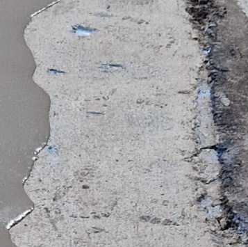
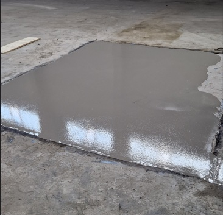
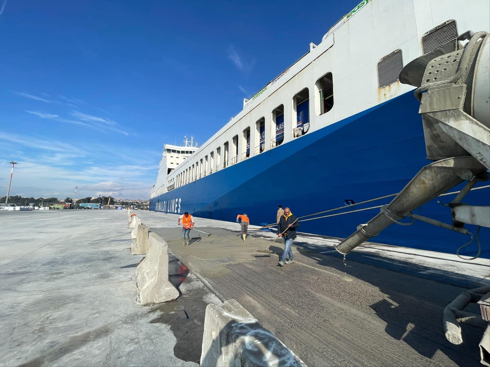

Für Sanierungsreferenzen mit Vorher/Nachher-Bildern (aktuell 1, wächst mit dem One-Pager-Prozess). Der Sanierungseffekt IST das Argument — er steht ganz oben, noch vor dem Titel. Referenzen ohne Bildpaar fallen automatisch auf Variante B zurück.

Vorher
NachherStandard für alle Referenzen mit Bild (27 mit eigenem Bildsatz): erstes Galeriebild bzw. Hauptbild als Full-Width-Hero, Navy-Verlauf von unten, Titel + Chips im Bild. Gleiche Bildsprache wie der Homepage-Hero. Referenzen mit Platzhalter-Bild (aktuell 25) behalten den heutigen Card-Kopf ohne Hero.

Hochbelastbare Flächen für den Fährbetrieb, Einbau im laufenden Hafenbetrieb
Kompromiss ohne Overlay-Typografie: links Navy-Block mit Titel und Kurz-Fakten, rechts das Bild in voller Höhe. Ruhiger und sehr gut lesbar, aber das Bild wirkt kleiner — der „Wow"-Moment ist schwächer als bei A/B.
Schnelle Wiederinbetriebnahme mit NEODUR Level